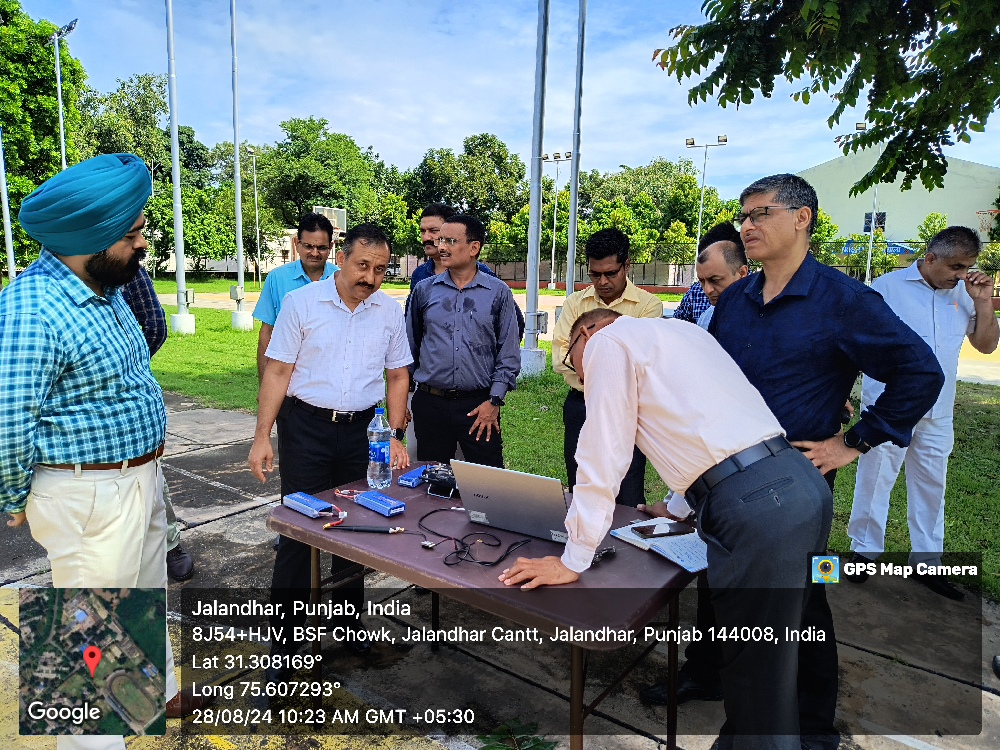
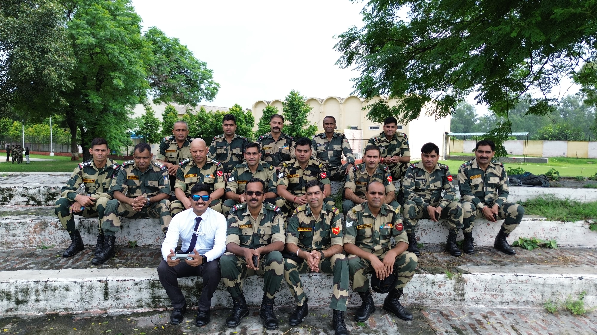
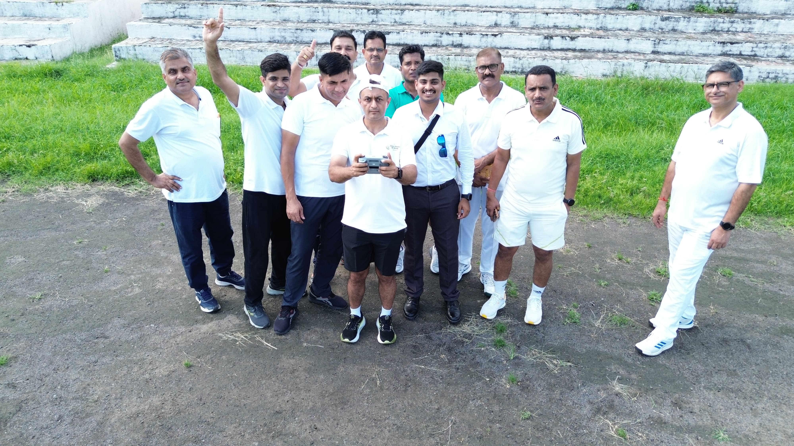
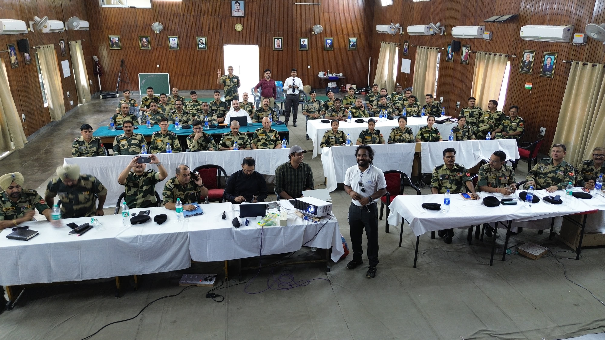

Bootcamp 5.0
About the Bootcamp
The "DroneTech: Exploring Drone Technology Ethics and Application for BSF" Bootcamp was successfully held from August 26 to August 30, 2024, at the BSF Headquarters Punjab Frontier, Jalandhar, Punjab. Organized specifically for Border Security Force (BSF) personnel, this bootcamp focused on exploring the practical applications of drone technology in enhancing border security operations. The program brought together 47 participants and provided them with in-depth training on the effective use of drones for border surveillance, threat detection, and prevention. Topics covered included GPS-based navigation for challenging terrains, safety protocols in border areas, handling security breaches, and setting up and managing advanced monitoring systems. The bootcamp also emphasized crucial areas such as encryption and secure data transmission, implementing geofencing, and enhancing drone capabilities with artificial intelligence. Participants were also given hands-on experience in drone assembly, testing, and real-world applications, ensuring they were equipped with the necessary skills to use drone technology effectively and securely in border operations. This specialized training aimed to improve the operational efficiency and security of the BSF using cutting-edge drone technology.



